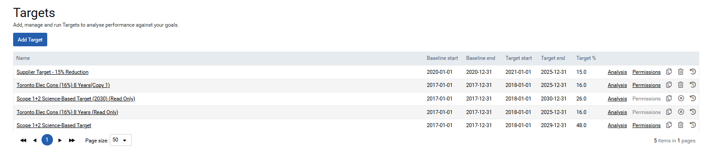
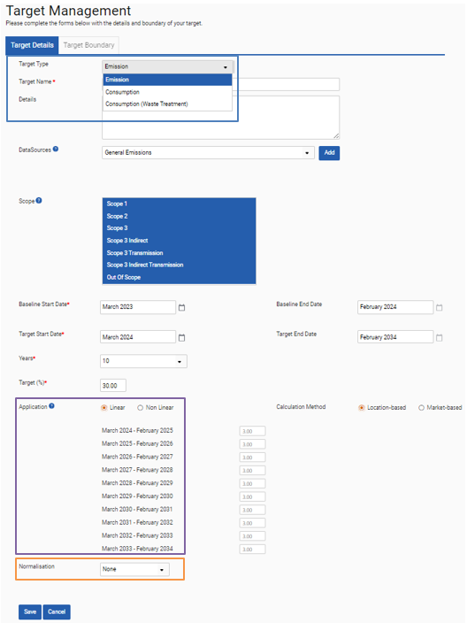
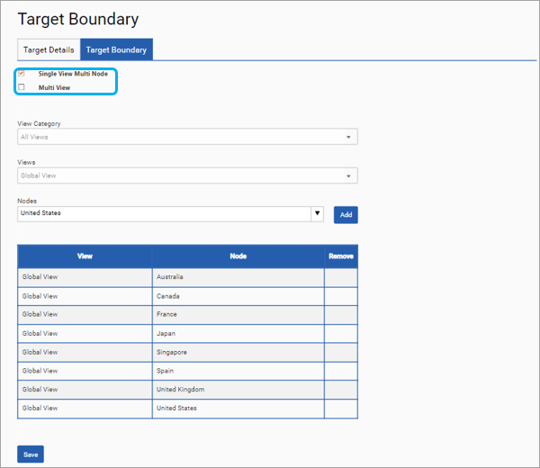

To create a new target, click on the ‘Add Target’ button (purple box) and to edit an already created target click on the target name (blue box). To check on the progress of your target click on the ‘Progress’ link (green box), which will launch the targets dashboard and to give another user access to a target click on the ‘Permissions’ link (orange box).

To complete the details of the new target please first select if it is an emissions or consumption target (screenshot on next page - blue box) and then complete the other details including a normalisation metric (orange box), if required. Please note the target name needs to be unique and it is recommended that the name makes clear what the target is for.
If the target is a non-linear one, then the annual percentages for the target (purple box) can be edited to reflect the changing variances in how the target should be met over multiple years.

Once you have completed the targets details tab, save your target and you will be taken to the Target Boundary screen. Here please select if this will be a ‘Single View Multi Node’ or ‘Multi View’ target (blue box). The first option is for targets that are for one view with one or multiple nodes. The multi view option is for multiple views but at the Client level node.
Select the View Category for the view(s) you require, then select the view(s) you are will be adding to your target. Add the required nodes if it is a Single View Multi Node target as shown in the screenshot below. If it is a multi-view target, then please select the views to add. Once this is complete, please click Save.

When you click save the table shown below is generated. It displays the node / view name, the baseline emissions or consumption and the % of the total baseline emissions or consumption that this equates to per node. For a non-linear target it is possible to edit the target % for each node and year.